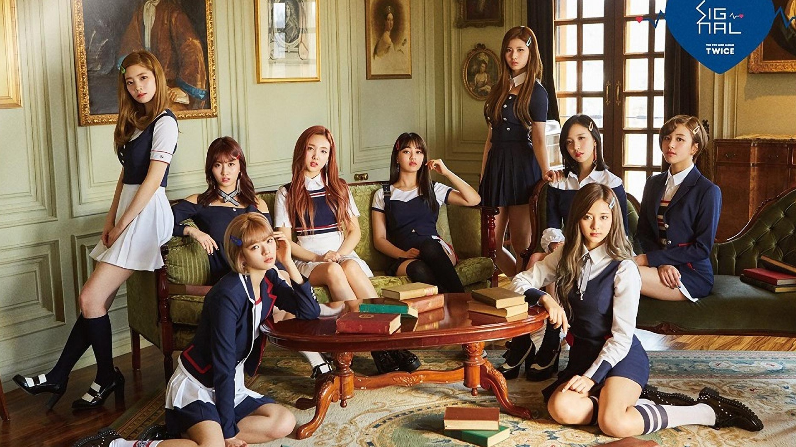

Twice
TWICE (트와이스) adalah girlband baru dari JYP Entertainment yang terbentuk dari program survival bernama “SIXTEEN” yang tayang di MNET. Setelah mulai tayang tanggal 5 Mei lalu, akhirnya pada tanggal 7 Juli JYP mengumumkan 9 anggota/member yang lolos untuk didebutkan sebagai girl group baru. 9 member itu yaitu Jihyo, Nayeon, Chaeyoung, Jungyeon, Mina, Sana, Dahyun, Tzuyu dan Momo. Pada awalnya grup ini hanya mempunyai 7 anggota (minus Momo & Tzuyu). Namun Tzuyu masuk karena sebelumnya telah mencuri banyak perhatian dan memiliki voting paling tinggi. Sedangkan untuk Momo, sebelumnya dia sudah tereliminasi dan Park Jin Yooung ingin sekali meliaht Momo debut dengan alasan kemampuan tarianya sangat luar biasa. Sebagai tamabahan, yang tidak lolos adalah Somi, Minyoung, Jiwon, Eunsuh, Chayeon, Natty, Chaeryoung dan Chayeon.
Twice akhirnya resmi debut pada tanggal 20 Oktober dengan album mini pertama bertajuk ‘The Story Begins’ dengan pemimpin track “Like OOH-AHH”. Lagu tersebut merupakan ciptaan dari composer berbakat Black Eyed Pilseung yang diketahui sukses membuat lagu “Only You” yang dibawakan oleh Miss A. video musik “Like OOH-AHH” berahsil ditonton lebih dari 45 Juta kali per April 2016 dan juga memecahkan rekor sebagai MV debut paling banyak ditonton menggantikan 2NE1 dengan MV-nya “Fire”.
Pada tanggal 25 April 2016, TWICE comeback dengan album mini keduanya bertajuk ‘Page Two’. Album mini keduanya tersebut berisikan total 7 buah lagu dengan lagu terdepanya “Cheer Up”. Video musik “Cheer Up”, berhasil ditonton lebih dari 10 juta kali dalam waktu 5 hari saja. TWICE berhasil meraih trofi pertamanya di program musik Mnet M!Countdown pada tanggal 5 Mei dan diikuti di Music Bank dan Inkigayo.
Pada tanggal 23 September 2016, TWICE akhirnya merilis warna official grup, Apricot dan Neon Magenta. 5 hari kemudian, JYP mengumumkan bahwa TWICE sedang mempersiapkan comebacknya pada bulan Oktober. Kemudian, pada tanggal 19 Oktober, TWICE mengungkapkan official lighstick mereka dengan nama “Candy Bong”. Nama tersebut terinpirasi dari lagu “Candy Boy” yang ada dalam album mini pertama mereka. Memeperingati setahun debut, TWICE merilis lagu baru berjudul “One In A Million” pada 20 Oktober. Lagu tersebut masuk dalam track ke-7 di album mini ketiga mereka TWICEcoaster : LANE 1 yang baru resmi diluncurkan pada tanggal 24 Oktober. Dalam album mini ketiganya, mereka memilih lagu “TT” sebagai titelnya.
Pada awal tahun 2017, JYP mengungkapkan bahwa Twice akan menggelar konser solo perdana sejak debut pada bulan Oktober 2015 lalu. Konser tersebut bertajuk “Twice 1st Tour: Twiceland The Opening ” yang digelar pada tanggal 17 – 19 Februari 2017. Seminggu kemudian, JYP mengungkapkan Twice akan merilis album spesial setelah menggelar konser perdana. Album spesial tersebut resmi dirilis pada tanggal 20 Februari 2017 berjudul ‘Twicecoaster: Lane 2’ dengan lagu terdepanya “Knock Knock”.
Pada bulan Februari 2017, Twice mengkonfirmasi akan debut di Jepang pada tanggal 28 Juni 2017. Lagu-lagu mereka yang menjadi hits, seperti Like Ohh-Ahh, Cheer Up dan TT juga akan masuk dalam album debut mereka di Jepang. Namun, sebelum debut di Jepang, Twice terlebih dahulu comeback dulu di Korea. Merekapun meluncurkan album mini keempatnya bertajuk ‘Signal’ pada 15 Mei dengan lead single “Signal” yang merupakan ciptaan dari Park Jin Young, yang tak lain merupakan CEO dari JYP Entertainment.